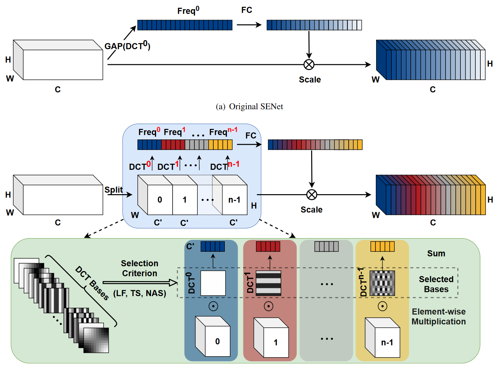
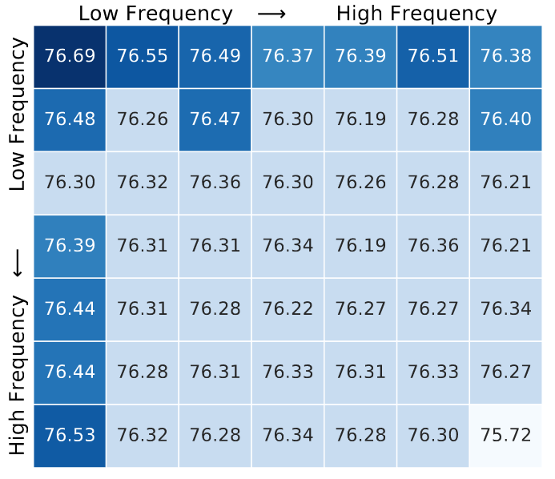
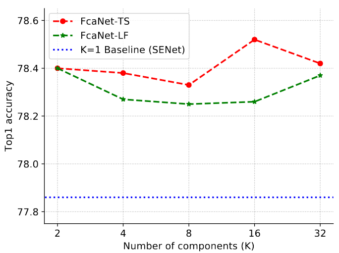
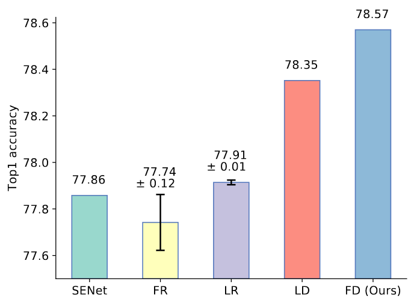

引言
由于通道注意力在特征建模上的简单性和有效性，成为深度学习领域流行的工具。而全局平均池化（GAP）由于其简单性成为了默认选择，但它的简单性也使得它很难很好地捕获各种输入的复杂信息。
本文将信道的标量表示看作一个压缩问题。也就是说，一个通道的信息应该被一个标量紧凑地编码，同时尽可能地保留整个通道的表示能力。而如何有效地压缩具有标量的信道是一大难点。
由于DCT的高压缩比可以满足用标量表示信道注意力的需求，以及它可微的性质可以简单地集成到CNN中，选择DCT定制通道注意力。本文主要贡献如下：
- 把通道注意力看作一个压缩问题，并在通道注意力中引入DCT。证明了传统GAP是DCT的一个特例。基于这一证明，在频域推广了通道注意力，并提出了多谱通道注意力框架（Multi-Spectral Channel Attention , MSCA），称为FcaNet；
- 我们提出了三种频率成分选择标准（LF低频选择，TS两步选择，NAS神经架构搜索选择）以及所提出的多光谱通道注意框架来实现FcaNet。
- 在ImageNet和COCO数据集上达到SOTA水平。
方法
回顾DCT和通道注意力
-
DCT： $$ f^{2d}_{h,w}=\sum_{i=0}^{H-1}\sum_{j=0}^{W-1}{x^{2d}_{i,j}B^{i,j}_{h,w}}\\ B^{i,j}_{h,w}=\cos(\frac{\pi h}{H}(i+\frac{1}{2}))\cos(\frac{\pi w}{W}(j+\frac{1}{2}))\tag{1} $$
-
通道注意力：通道注意力用标量来表示和评估每个通道的重要性，可以写成如下形式： $$ att=sigmoid(fc(compress(X))) $$ compress: $\mathbb {R}^{C\times H\times W}\rightarrow\mathbb{R}^C$ 是压缩方法。全局平均池化（GAP）可以视作一种压缩方法。
多谱通道注意力（Multi-Spectral Channel Attention，MSCA）
-
通道注意力的理论分析，定理1：GAP是2D DCT的特例，其结果与2D DCT的最低频率成分成正比。
-
证明：在公式(1)中，令h和w为0，有
$$ \begin{align} f^{2d}_{0,0} &=\sum_{i=0}^{H-1}\sum_{j=0}^{W-1}{x^{2d}_{i,j}B^{i,j}_{0,0}}\\ &=\sum_{i=0}^{H-1}\sum_{j=0}^{W-1}x^{2d}_{i,j}\\ &=GAP(x^{2d})\cdot HW \end{align}\tag{2} $$
在公式(2)中，$f^{2d}_{0,0}$表示2D DCT的最低频率成分，与GAP成正比，定理1得证。
-
-
多谱通道注意力模块：
通过定理1可知，在使用通道注意力中使用GAP意味着只保留了最低频的信息，为了更好地压缩信道并引入更多信息，需要利用DCT中更多的频率信息。
首先，将输入X沿通道方向分块为$[X^0,X^1,\dots,X^{n-1}]$，其中$X^i\in\mathbb{R}^{C’\times H\times W},\ C’=\frac{C}{n}$，C能被n整除。对每部分进行2D DCT操作，有： $$ Freq^i=2\text{DDCT}(X^i) $$ 最终的压缩向量可以表示如下： $$ \begin{align} Freq&=compress(X)\ &=cat([Freq^0,Freq^1,\dots,Freq^{n-1}]) \end{align} $$ 最终的多谱注意力表示如下： $$ ms_att=sigmoid(fc(Freq)) $$
 -
频率成分选择标准（Criteria for Choosing Frequency Components）
提出三种选择频率成分的标准：
- FcaNet-LF：选择低频成分
- FceNet-TS：通过两步选择方案确定，首先确定每个频率分量的重要性，然后评估不同频率分量数量的效果
- FcaNet-NAS：通过神经架构搜索来搜索通道的最佳频率成分
实验
消融实验
-
单体频率分量的影响（The effects of individual frequency components）
ImageNet上的最小特征图大小为7x7，因此将2D DCT的频率空间划分为7x7，测试每部分的性能如下图（TOP-1 准确率）：
可以看出，低频有更好的表现，也验证了SENet的成功和深度网络偏好低频信息的结论。然而几乎所有的频率成分(除最高频率外)与最低频率成分之间的差距非常小(<=0.5% Top-1准确率)。这说明其他频率成分也能很好地应对通道注意力机制，在频域上泛化通道注意力是有效的。
-
频率分量的数量的影响（The effects of different numbers of frequency components）
对于TS，选取上图中Top-K性能最高的频率成分；对于LF，选取K个最低频率成分的结果。结果如下图所示，可以发现：
- 使用多谱注意力的性能比仅使用通道注意力中的GAP都有提高
- 当k=2和16时效果最好
 -
与完全可学习的通道注意力相比：2D DCT的基函数可以看做是包含DCT系数的张量
FR：Fixed tensor with Random initialization，随机初始化固定张量
LR：Learned tensor with Random initialization，随机初始化可学习张量
LD：Learned tensor with DCT initialization，DCT初始化可学习张量
FD：Fixed tensor with DCT initialization，DCT初始化固定张量

讨论
-
多谱框架（multi-spectrum framework）如何压缩和嵌入更多信息：
由于深度网络是冗余的，若两个通道是冗余的，则通过GAP只能得到相同的信息；而在多谱注意力中，不同的频率分量包含不同的信息，因此可以从冗余通道中提取更多的信息。
-
复杂度分析：
DCT权重是预定义的常数，没有额外参数；额外计算成本与SENet相当。
-
代码实现：
多谱注意力与SENet的区别仅在于信道压缩方法（GAP vs. multi-spectrum 2D DCT），2D DCT可以看做是输入的加权和，因此该方法可以很容易地集成到任意通道注意力方法中。